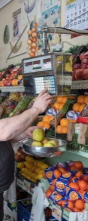
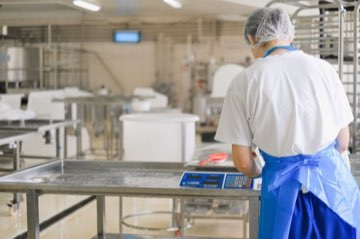
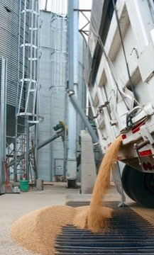
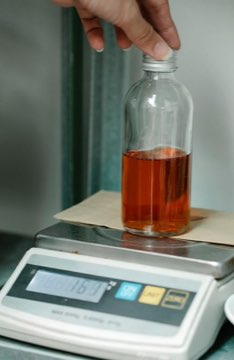
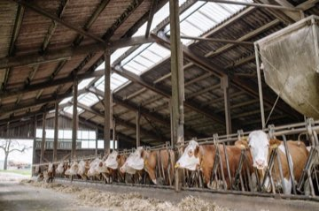

★★★★★
Avaliações no Google
Consulte a nota e os comentários mais recentes diretamente no perfil público da Lumak.
Ver avaliações no GoogleVenda, manutenção, aferição e calibração de balanças comerciais, industriais, rodoviárias, analíticas e de barras. Atendimento técnico multimarcas para quem não pode errar no peso.
Da escolha do equipamento ao laudo técnico, a equipe acompanha todo o ciclo de vida da sua balança.
Equipamentos dimensionados para comércio, indústria, laboratório, agro e transporte.
Ver vendasManutenção preventiva, corretiva e recuperação de componentes com equipe própria.
Conhecer suporteProcesso técnico com rastreabilidade, conformidade INMETRO e relatório no modelo RBC.
Ver processoSistemas de pesagem, apps e programas sob medida para agilizar processos.
Ver balançasModelos comerciais, industriais, rodoviários, analíticos e rurais com instalação, garantia e suporte pós-venda.

Comercial Mercados, açougues e lojas.
Industrial Produção, estoque e expedição.
Rodoviária Caminhões e cargas de alto volume.
Analítica Laboratório e controle de qualidade.
Gado + app Barra e indicador próprios com controle total no app.Além dos equipamentos de linha, criamos apps, programas e sistemas de pesagem sob medida. Você explica o que precisa automatizar; a Lumak desenvolve uma solução para reduzir retrabalho, integrar controles e dar mais agilidade à operação.
Avaliações públicas destacam agilidade, conhecimento técnico e comprometimento no suporte.
Consulte a nota e os comentários mais recentes diretamente no perfil público da Lumak.
Ver avaliações no GoogleÓtimo serviço prestado, atenciosos, ágeis.Luiz Henrique Oliveira
Comprometimento, conhecimento e atendimento.Pattrick Tôlentino
Quem pesa com precisão não perde na venda.Posicionamento Lumak Balanças
Envie capacidade, tipo de uso e cidade de atendimento. A equipe retorna com orientação técnica, prazo e proposta.